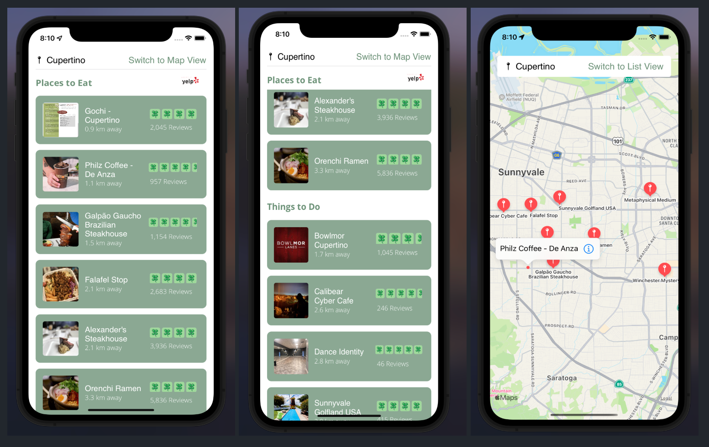
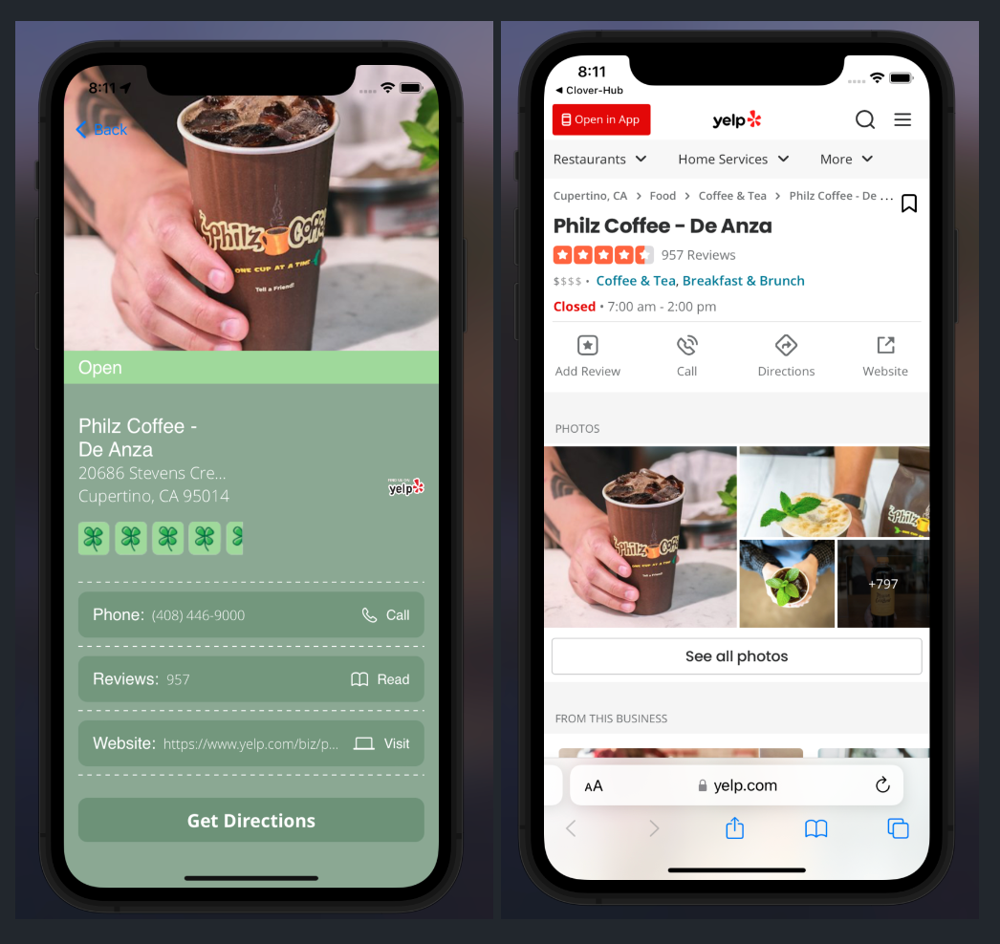
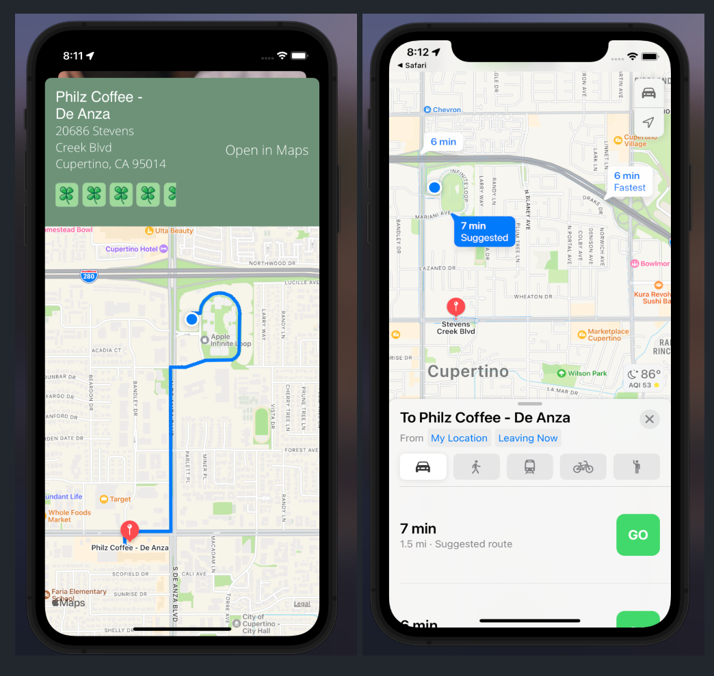

Portfolio

Overview
Clover Hub is an explorer's best friend! The app is designed to utilize geolocation to offer the user with a comprehensive list of nearby "hidden clovers" (which are the must-see places in the user's area). But don't worry, we care about your privacy! Because of this, we do not collect any data about your location without your permission. The user is intially requested to accept a request for tracking their geolocation, before being shown the list of hidden clovers.
Implementation
Designed and developed an iOS app that utilizes geolocation services in order to fetch the users precise location. Displayed the data in a comprehensive list and map interface, which relies on the Yelp API in order to obtain a set of nearby tourist attractions. Includes directions to the selected location along with details such as reviews, ratings, contact information, and more.
In-App Views
The app's user interface is designed with Figma and graphics are from
the Canva platform. Note that the location used for the demo pictures below
is set to Apple Headquarters.
Welcome Screen & Request for Permission
Hidden Clovers Displayed as List & Map Views

Details of the Selected Location

Directions to the Selected Location
